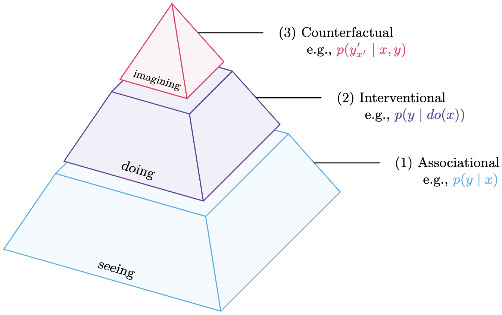
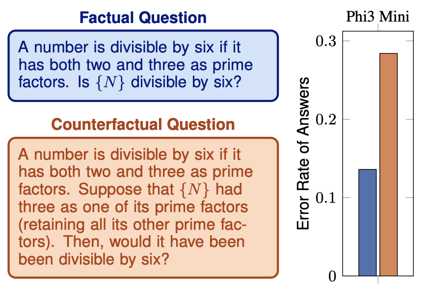

Causal reasoning and compositional reasoning are
two core aspirations in AI. Measuring
these behaviors requires principled
evaluation methods. Our work considers both behaviors simultaneously, under the umbrella of compositional causal reasoning (CCR):
the ability to infer how causal measures compose
and, equivalently, how causal quantities propagate
through graphs. The

Pearl's Causal Hierarchy: observing factual realities, exerting actions to
induce interventional realities, and imagining alternate counterfactual realities
[Bareinboim et al. 2022]. Lower levels underdetermine higher levels.
We define compositional consistency: correct inference that
equivalent compositions are indeed equal. We measure compositional consistency with respect to ground truth (external
validity) and concordance among the LM’s responses (internal consistency).
See the images below for further intuition on the intersection of causility and compositionality.

Lower error rate seen on factual questions (recall) than counterfactual questions (reasoning) [Hüyük et al. 2025].
@inproceedings{maasch2025ccr,
title={Compositional Causal Reasoning Evaluation in Language Models},
author={Jacqueline Maasch and Alihan Hüyük and Xinnuo Xu and Aditya V. Nori and Javier Gonzalez},
booktitle={Proceedings of the 42nd International Conference on Machine Learning (ICML)},
url={https://arxiv.org/abs/2503.04556},
year={2025}
}